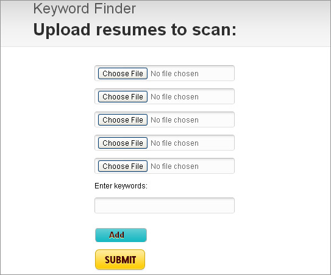

ResumeScanner is a web application that lets employers gathers userful
information from multiple resumes at the same time without having to open
and scan them manually.
Is my uploaded resume safe?
Completely. This tool does not save a resume or its contents. The resume
contents are discarded after the processing is complete and no document
is saved by the system.
Features
1. KeywordScanner
User can upload up to five resumes and enter the keywords she wants
to find. KeywordScanner will scan the uploaded resumes and search for
the keywords.
.
Is the ResumeScanner free to use?
Absolultely. I do appreciate your suggestinons to make this tool more
effective user friendly and.
What resume formats can I upload?
PDF, text and Microsoft Word
What's coming next in ResumeScanner?
Don't know. It is a work in progress. Instead of creating what I feel
will be useful, I want to create stuff that will make your life easier.
So please do let me know what features you will like to see added to
this webapp.
Contact.
About me
My name is Pawan Mittal I am a web application developer working for
Wired. As a software developer I specialize in solving problems related
to website setup, performance, scalability, search engine optimization,
content management system, user input, and database.
Include a photo